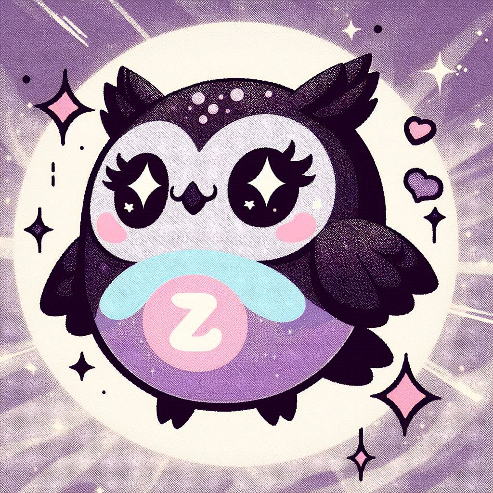
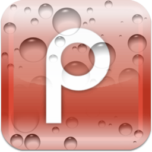
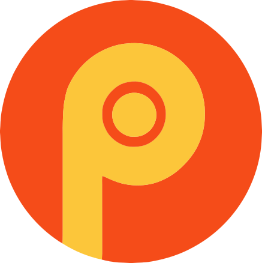
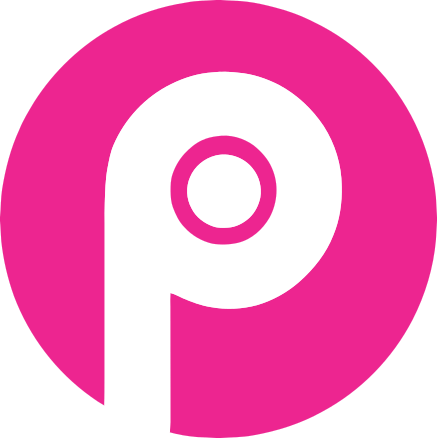
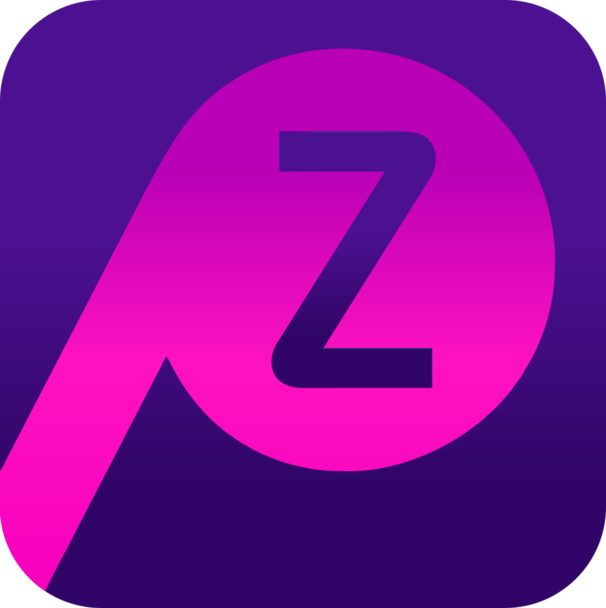
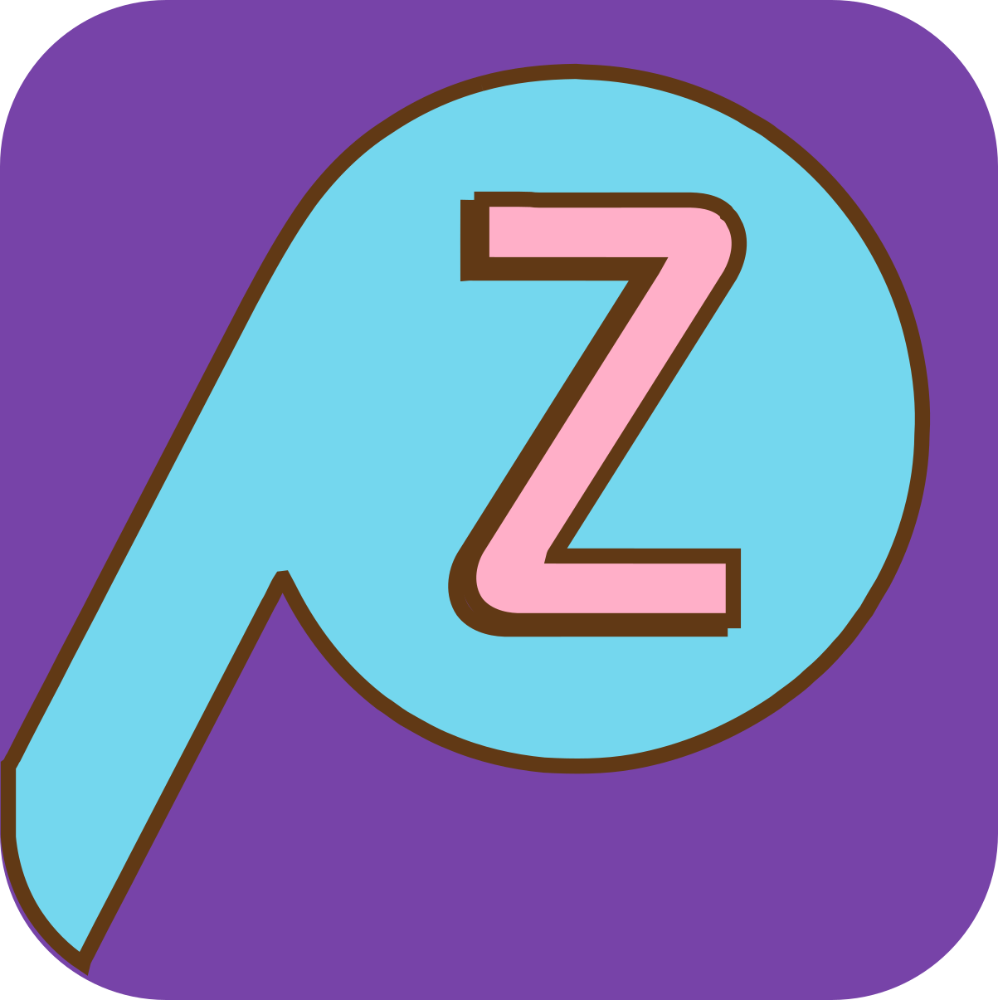
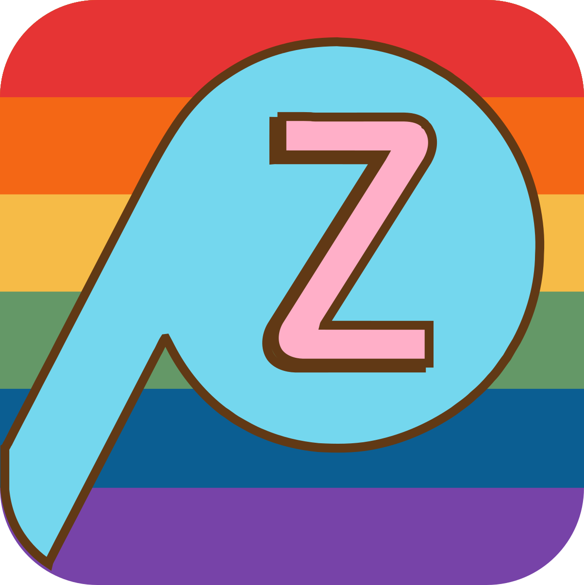

O Peeper estava se despedindo. Mas Elon Musk despediu o Twitter e renovou minhas energias (o nascimento da Lens também renovou).
Acesse aqui:
(por enquanto, precisa ter uma conta no protocolo Lens, que custa $10 - eu não ganho nada com isso, só pra clarificar)

Justiça ao Peeper:
Fico pensando nisso: o Peeper foi chamado de "Facebook Roxo" ... ...então depois foi o Facebook/Meta quem ficou conhecido por copiar (ou comprar) outras redes sociais, inclusive com o Threads vs. Twitter.

Também relembro: no final de 2011 parei pra pensar em uma alternativa ao Twitter mais divertida, porém mantendo a essência das nomenclaturas. Lembrei como no Brasil o som de um pássaro - principalmente uma coruja - é conhecido como um "pio" e como isso se traduziria em Inglês. Na época, o Google Translate me ajudou a descobrir que as postagens deveriam ser "peeps", então naturalmente a rede social se chamaria Peeper! Porém descobri que peeper.com redirecionava para um site XXX e que o próprio nome Peeper significa espiar aquele ato; como o foco era o Brasil e a América Latina: ignorei o significado inglês do nome e assim continuou. Mas aí vem a segunda ironia do destino que fez justiça ao Peeper: o Twitter deixou de ser Twitter e mudou o nome para algo que lembra pornografia: "X".

Será então que o Peeper é realmente um copycat comparado ao Threads e tem um nome infeliz comparado ao "X"?! Anos após, o destino provou que não!
— Daniella Mesquita in 2022.
Mas o melhor de tudo: o Peeper agora vai se chamar Peepz e mais!
Novo ícone:
Meet our mascot who peeps, Powl the owl:

(Image generated via a prompt on Bing Image Creator, unlike our icon which was crafted by an human: Daniella)
Histórico de ícones:
| 2011/2012 | (normal version)  (iOS version)Primeiro upload (Blogger) em: sábado, 10 de março de 2012 às 17:21:33.168 |
| 2012/2013 | (normal version) (lowres/favicon) |
| 2017 |  |
| 2017/2018 |  |
| 2023 |  Feito em: 03 dez 2023 ~03:45:51 |
| 2024 |  Feito em: seg 26 ago 2024 ~22:09:29 |
Ícones sazonais
| Junho/Mês do Orgulho LGBTQIAPN+ |  |